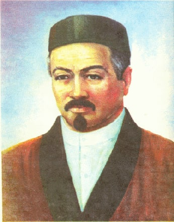
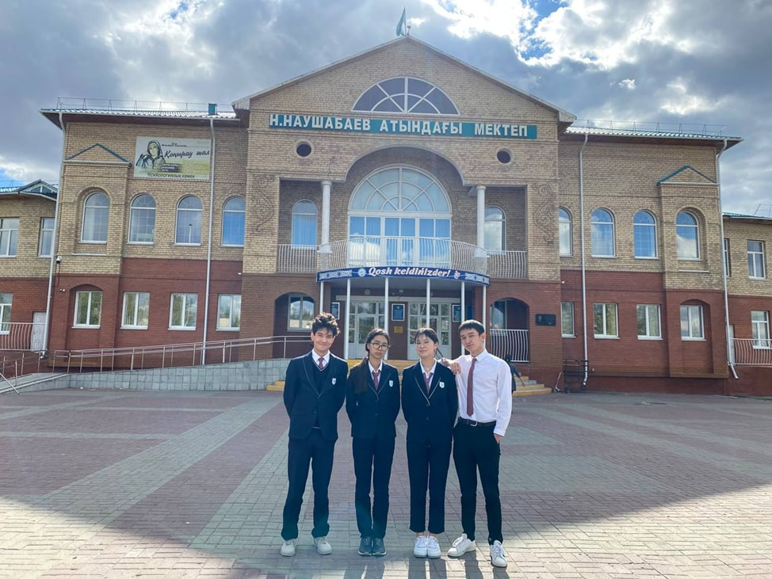
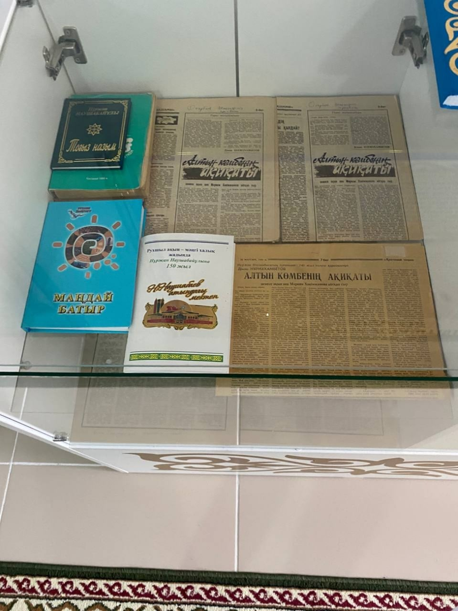
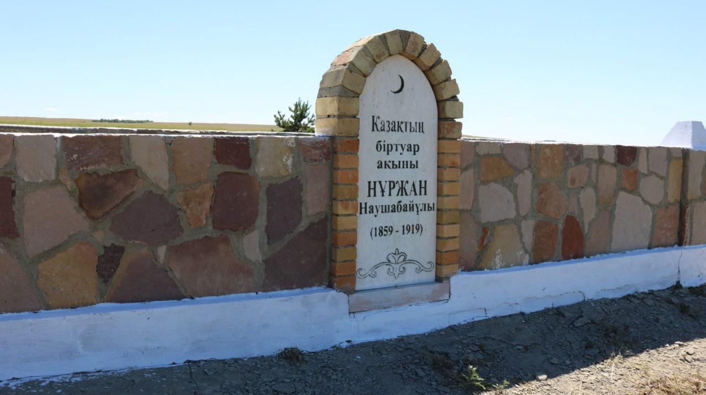

Nurzan Naushaubaev

БАСТЫ БЕТ
Бұл сайт ақын, діни-ағартушылық бағыттың көрнекті өкілі, әнші, күйші композитор Сегіз сері Баһрамұлы Шақшақовтың өмірі мен ерлік істерін жырға қосып, «Сегіз сері» дастанын жазған. Нұржан Наушабайұлыға арналған. Мұнда Н.Наушабайұлының өмірбаяны, өмірінен алынған қызықты деректер, фото-бейне материалдар, естеліктер, мұражай ұсынылған. Сайт ХХ ғасырдағы қазақ әдебиетіне, сол кездегі мәдени білімге қызығушылық танытатын қалың оқырман қауымға пайдалы болады.

Біз Туралы

Баишев Илияс- бағдарламаушы
Батрханова Ельдана – копирайтер
Айжарыкова Томирис – копирайтер
Бахыт Шалқар – креативті директор
Батрханова Ельдана – копирайтер
Айжарыкова Томирис – копирайтер
Бахыт Шалқар – креативті директор
Өмір Жолы
Наушабаев Нұржан (Нұрмұхамбет) (1858, қазіргі Қостанай облысы Алтынсарин ауданы – 1919) – ақын. Діни-ағартушылық бағыттың көрнекті өкілі. .
Малибайдан ұрпақ қалған жоқ. Маликке Қыпшақ руынан шыққан Нұрым есімді адам берілді. Айтбай Нұрымнан, Наушабай Айтбайдан, Наушабайдан - XIX ғасырдың аяғы мен XX ғасырдың басындағы қазақ ақыны Нұржан Наушабаев дүниеге келді.
Анасы Қадишадан (Шал ақынның қызы) жастайынан айырылған ол нағашыларының қолында тәрбиеленген. Нұржан жасынан пысық, әрі ақын, шешен, әнші, балуан жігіт болып өседі. Троицк медресесінен жақсы білім алып, ер жете «орта» аталатын дәулет құрды. Бекерден бекер емес, Байымбет қарттардың айтуынша, марқұм шалдың рухы Нұржанға түсіп, оны талантымен сыйлаған. Нұржан Наушабайұлының әкесі әлі бала болған кезде, оның әкесі Құлеке әйеліне: "Менің ұлым батыр болады, оған жақсы күтім жаса", - деді де, ол күле отырып:"сенің ұлың батыр емес, ақын болады: ол сәбидің кеудесін сорған кезде, онда домбырадағыдай ойнап жүрді", - деп жауап берді.
Бұрынғы зерттеулердің біразында 1859 жылы деп, кейбір деректерде 1857 жылы деп көрсетілген. Ал 1997 жылы әдебиет зертттеуші ақын Ақылбек Шаяхметтің құрастыруымен жарық көрген.
«Алаш» атты жинақта бір газет тілшісінің хабарына сілтеме жасалады. Онда: “Биіктен еңкейіске қадам басып, Жыл ұлу, үшеуінде мен алпыстың” –деген ақынның өз сөзін келтіре отырып, «ол 1856 жылы туған болып шығады» деген болжам жасалған. Бірақ бұған да қарсы дау айтушылар бар. «Игі жақсы» дейтіндермен, әсіресе Ыбырай Алтынсаринмен жақындасып, күндері- нің көбін солармен бірге өткізеді. Ыбырай Нұржанды жоғары бағалай келіп, оның ақындық қабілетін жемісті арнаға салуда шешуші рөл атқарған.
Нұржанның әйелі Бибісара да ақын болып, екеуі хат арқылы айтысумен қосылған. Олардан туған жалғыз ұл Сұлтанғазы 1911 жылы өліп, артында ұрпақ қалмаған. Оның 40 шақты өлеңі мен айтыстары “Жұмбақ. Нұржан мен Сапарғалидың жұмбақ айтысы” (1903), “Манзұмат қазақия” (1903), “Алаш” (1910) атты жинақтарында Қазан қаласында басылған. Ақындығының өзге замандастарынан бір ерекшелігі – оның өлеңдерінде назым жанрының басымдығы, негізінен, назым жанры түркі тілінен “өрнекті өлен” болып аударылады.
Анасы Қадишадан (Шал ақынның қызы) жастайынан айырылған ол нағашыларының қолында тәрбиеленген. Нұржан жасынан пысық, әрі ақын, шешен, әнші, балуан жігіт болып өседі. Троицк медресесінен жақсы білім алып, ер жете «орта» аталатын дәулет құрды. Бекерден бекер емес, Байымбет қарттардың айтуынша, марқұм шалдың рухы Нұржанға түсіп, оны талантымен сыйлаған. Нұржан Наушабайұлының әкесі әлі бала болған кезде, оның әкесі Құлеке әйеліне: "Менің ұлым батыр болады, оған жақсы күтім жаса", - деді де, ол күле отырып:"сенің ұлың батыр емес, ақын болады: ол сәбидің кеудесін сорған кезде, онда домбырадағыдай ойнап жүрді", - деп жауап берді.
Бұрынғы зерттеулердің біразында 1859 жылы деп, кейбір деректерде 1857 жылы деп көрсетілген. Ал 1997 жылы әдебиет зертттеуші ақын Ақылбек Шаяхметтің құрастыруымен жарық көрген.
«Алаш» атты жинақта бір газет тілшісінің хабарына сілтеме жасалады. Онда: “Биіктен еңкейіске қадам басып, Жыл ұлу, үшеуінде мен алпыстың” –деген ақынның өз сөзін келтіре отырып, «ол 1856 жылы туған болып шығады» деген болжам жасалған. Бірақ бұған да қарсы дау айтушылар бар. «Игі жақсы» дейтіндермен, әсіресе Ыбырай Алтынсаринмен жақындасып, күндері- нің көбін солармен бірге өткізеді. Ыбырай Нұржанды жоғары бағалай келіп, оның ақындық қабілетін жемісті арнаға салуда шешуші рөл атқарған.
Нұржанның әйелі Бибісара да ақын болып, екеуі хат арқылы айтысумен қосылған. Олардан туған жалғыз ұл Сұлтанғазы 1911 жылы өліп, артында ұрпақ қалмаған. Оның 40 шақты өлеңі мен айтыстары “Жұмбақ. Нұржан мен Сапарғалидың жұмбақ айтысы” (1903), “Манзұмат қазақия” (1903), “Алаш” (1910) атты жинақтарында Қазан қаласында басылған. Ақындығының өзге замандастарынан бір ерекшелігі – оның өлеңдерінде назым жанрының басымдығы, негізінен, назым жанры түркі тілінен “өрнекті өлен” болып аударылады.
Естелік
Мұражай
Нұржан Наушабаұлыны естелікке сақтау мақсатында қоғамдық белсенділер біршама қадам жасады. 2004 жылында Тобыл қаласындағы мектебіне ақынның аты берілді, сол кезден бастап, дейін белсенділердің дарынды айтысшыны мәңгілік еске сақтау үміті үзілген жоқ. Нәтижесінде гимназияның фойесінде Нұржан Наушабайұлының бюсті орнатылған және сол мектептің ішінде мұражай ашылған. «Біз Қостанай облысының әкімі Қайрат Ахметовтің қолдауына ие болдық», - деді осы идеяны алға тартқан белсенділердің бірі Марат Саматов. Нұржан Наушабайұлы қатысты деректер бүкіл облыстық интеллигенциясы жинау тырысты. Олар бірлескен күшімен мұражайдың негізін қалап, тұлға жайлы мәліметтерді жинап берді. Мұражайда Нұржанның баспасөз бетіндегі ескертулерден бастап, оның ескерткіш дәл көшірмесін қарап шығуға болады. Салтанатты шараға жиналғандардың барлығы бұл шара гимназия оқушыларының жас ұрпақ тәрбиесін дұрыс көрсететініне сенім білдірді. Өйткені, дәл осындай есімдерден, Отанға деген риясыз сүйіспеншіліктің үлгілерінен, дарынды шығармалардан нағыз патриоттық сезім өркендеп, тамыр тартады.
Нұржан Наушабаұлыны естелікке сақтау мақсатында қоғамдық белсенділер біршама қадам жасады. 2004 жылында Тобыл қаласындағы мектебіне ақынның аты берілді, сол кезден бастап, дейін белсенділердің дарынды айтысшыны мәңгілік еске сақтау үміті үзілген жоқ. Нәтижесінде гимназияның фойесінде Нұржан Наушабайұлының бюсті орнатылған және сол мектептің ішінде мұражай ашылған. «Біз Қостанай облысының әкімі Қайрат Ахметовтің қолдауына ие болдық», - деді осы идеяны алға тартқан белсенділердің бірі Марат Саматов. Нұржан Наушабайұлы қатысты деректер бүкіл облыстық интеллигенциясы жинау тырысты. Олар бірлескен күшімен мұражайдың негізін қалап, тұлға жайлы мәліметтерді жинап берді. Мұражайда Нұржанның баспасөз бетіндегі ескертулерден бастап, оның ескерткіш дәл көшірмесін қарап шығуға болады. Салтанатты шараға жиналғандардың барлығы бұл шара гимназия оқушыларының жас ұрпақ тәрбиесін дұрыс көрсететініне сенім білдірді. Өйткені, дәл осындай есімдерден, Отанға деген риясыз сүйіспеншіліктің үлгілерінен, дарынды шығармалардан нағыз патриоттық сезім өркендеп, тамыр тартады.

Жерленген жер

Қазақтың біртуар ақыны Нұржан Наушабайұлы 1859 жылында Құттық ауылында дүниеге келді және 1919 жылында қайтыс болды. Дарынды тұлға орыс, татар, башқұрт және басқа түркі тілдерін меңгерген. Философтың жерленген жері Қостанай облысындағы Владимиров Ауылынан 12 шақырым ескі мұсылман зиратында орналасқан. Жергілікті молдалар келген қызыққыштарға Нұржан Наушабайұлының басына қойылған көк тасына жолын көрсетеді.
Владимиров ауылы ең алдымен Нұржан Наушабайұлы қайтыс болған жері ретінде атақты. Ауылының кіреберісте ақынның құрметіне және оның атын мәңгілік еске сақтау мақсатында ескерткіш қойылған. Елді мекенді өтіп бара жатқан жолаушылар үлкен ескерткішті көрмей өте алмайды.
Қазақ мәдениетінің дамуына зор үлес қосқан Нұржан Наушабайұлы секілді тұлғалар естерімізде қалу қажет. Орнатылған естеліктер біз және келер ұрпақтарға ұмыту бермейді.
Кiтаптар
Ұйықтама, оян, Алашым!
Алаш